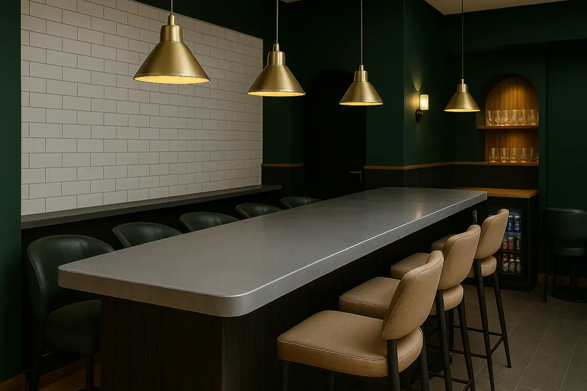

Whether sleek and modern or hand-aged for a more rustic aesthetic, zinc creates a distinctive bar surface in any space.
We offer finishes like lightly aged and antique zinc, helping you create a bar top that truly fits your brand’s style. They’re also an excellent option for creating an extra special home bar.
Simply contact our team for a quote or to discuss your requirements.
Cut to size
At Halman Thompson, we make zinc bar tops to fit your exact space and requirements. Whether you need a long, straight bar, a U-shape, a curved design, or specific cut-outs for taps, sinks, and other bar equipment, our expert team will handcraft a zinc bar top that fits just right. Give us your plans or measurements, and we will shape and finish your bar top to your precise specifications, making sure it’s both practical and looks great.

Ready to go
Your custom zinc bar top will arrive fully finished and ready for easy installation, helping to keep any disruption to your business to a minimum. From our first chat to final delivery, we keep the process nice and simple. We manage all the fabrication, ensuring your high-quality zinc bar top is ready to become a stylish and lasting feature in your venue. Our usual turnaround time is 5-8 weeks, and the price includes delivery, so you can plan your project with peace of mind.
Please get in touch for a bespoke quote .
Custom Zinc Bar Tops
The unique quality of a Halman Thompson zinc bar top comes from our custom approach. Each bar top is made by our skilled metalworkers in the UK. We carefully hand-age premium zinc sheets to create bespoke finishes like our lightly aged or antique zinc , giving your bar a distinct look and feel. You can choose a lacquered finish, which protects the surface and keeps it looking consistent over the years, or an unlacquered zinc bar top that will age naturally over time, developing its own unique patina. The custom nature of our work means your zinc bar top will be a true reflection of your desired style.
WHY CHOOSE A ZINC BAR TOP?
Choosing a zinc bar top for your business or even a high-end home bar has many benefits. Zinc offers a distinctive style that can suit any look, from industrial to traditional, depending on the finish. An unlacquered surface will develop a unique patina over time, adding real character to your space.
For busy commercial environments, the toughness of a zinc bar top is a key advantage. It’s strong and stands up well to the daily use, spills, and knocks of a lively bar. Each zinc bar top is made to your exact measurements, fitting in perfectly with your bar’s layout and equipment. Zinc is also known for being hygienic, which is great for places where drinks and food are served. Plus, zinc bar tops are easy to look after and their natural durability means they will look good and work well for years, making them a smart and long-lasting investment. As a sustainable and recyclable metal, zinc is also a good choice for eco-conscious businesses.
LOOKING AFTER YOUR ZINC BAR TOP
Your Halman Thompson zinc bar top is easy to care for, ensuring it stays a great feature in your establishment for a long time. For all finishes, the basic cleaning is the same: use a soft, damp cloth with warm, soapy water. A gentle detergent can be used if needed. It’s important not to use abrasive pads or harsh chemical cleaners on any zinc surface, as these can damage the metal.
The finish you choose will influence how your zinc bar top ages and its appearance over time. A lacquered zinc bar top has a clear protective coating to maintain its original look and offer more protection against scratches and spills. In contrast, an unlacquered zinc bar top is designed to age naturally, developing a unique patina that adds character and depth of colour – a look many find desirable. However, it’s a good idea to wipe up acidic spills (like citrus juice, vinegar, or wine) quickly to reduce marking, though many see these marks as part of the bar’s authentic charm.
For all zinc bar tops, using coasters and bar mats is a good idea to help protect the surface. With these simple care steps, your zinc bar top will continue to be a durable and attractive part of your business for many years to come!
Contact our sales team for a fast, free quotation for your handmade zinc bar top today.


If you can dream it, we’ll make it.
Bars, balustrades, staircases, worktops, cladding and pieces that don’t have a name yet. Our designers and craftspeople work in brass, copper, zinc and steel, and alongside wood.